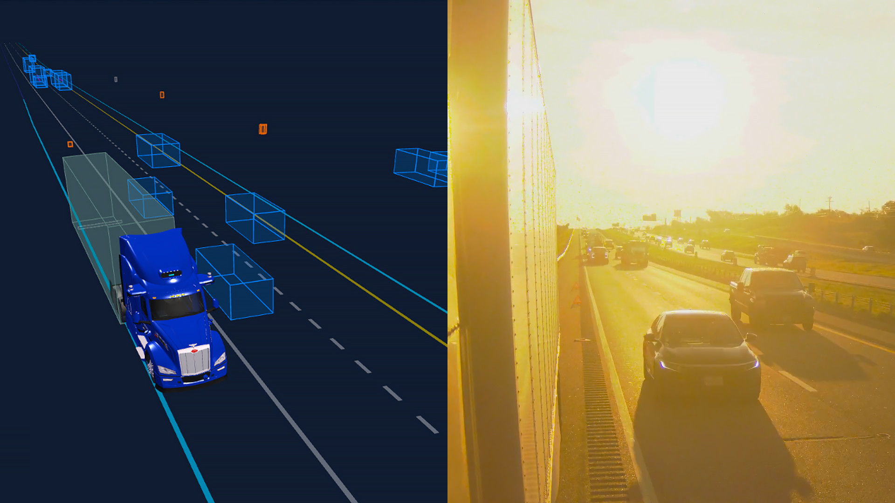

80,000ポンドのトラックを時速65マイルで運行するとき、可視距離が1メートル伸びることにも意味がある。検出距離が長ければ、Aurora Driverはより長い反応時間と、より安全に操舵する余地を得られる。高速道路速度の自律走行には、低反射率の危険物を数百メートル先で一貫して検出・追跡でき、照明、道路形状、天候により視界が難しくなる状況でも性能を維持する知覚が必要である。
Aurora Driverは、この要求を満たすために長距離認識を重視して構築されている。マルチセンサーアーキテクチャは、現在450メートル超を見通す独自のFirstLight Lidar、イメージングレーダー、高解像度カメラ、そしてMainline Perception、Remainder Explainer、Fault Managementを含む密結合ソフトウェア層を組み合わせる。次世代FirstLightの検出距離はさらに1,000メートルへ拡張される。
各センサーは同じ世界を異なる物理原理で観測する。LiDARは距離と形状を高精度に捉え、イメージングレーダーは速度情報と悪天候耐性を提供し、カメラは豊富な視覚文脈を与える。Auroraは、これらの相補性を利用して、高速L4トラックに必要な長距離・高信頼の知覚を実現している。
Mainline Perceptionは、センサーデータを統合して、交通参加者、障害物、走行判断に関係する物体を検出・追跡する中核レイヤーである。長距離検出と低反射物体の扱いは、高速道路で停止車両や落下物に対応するうえで特に重要になる。
Remainder Explainerは、通常の物体カテゴリに明確に当てはまらない残差的な観測を説明し、未知・曖昧な物体に対する安全側の判断を支える。Fault Managementは、センサーや知覚出力の異常を監視し、冗長性と安全な縮退動作を支える。これらを組み合わせることで、Aurora Driverは高速道路環境で必要な信頼性を確保する。